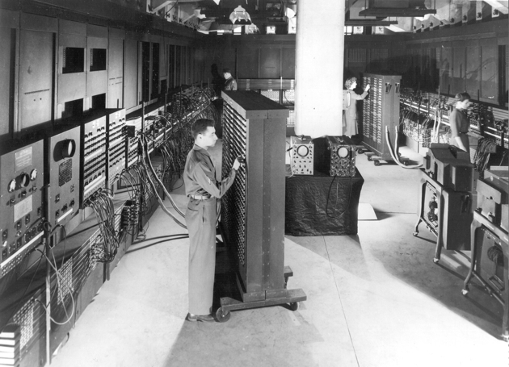

Kısa cevap: Bilgi ve Dijital Çağ, bilginin elektronik araçlarla üretilip saklandığı, işlendiği ve ağlar üzerinden dolaşıma girdiği toplumsal dönüşümü anlatır. Bilgi insanlık için yeni değil; değişen, onu işleme ve paylaşma ölçeğimiz. Bilgisayarlar ve internet bu dönüşümün araçları oldu, fakat onlara erişim ve sağladıkları imkânlar herkes için aynı değil.
Bilgi ve Dijital Çağ hangi yıllarda başladı?
Bu dönem için herkesin kabul ettiği tek bir başlangıç yılı yok. “Bilgi Çağı” çoğunlukla 20. yüzyılın ikinci yarısından bugüne uzanan toplumsal ve ekonomik dönüşümü anlatır; “Dijital Çağ” ise sayısal elektronik, bilgisayarlar ve ağların yaygınlaşmasını vurgular. Bazı anlatılar elektronik bilgisayarların doğuşunu, bazıları kişisel bilgisayarların ve internetin yaygınlaşmasını başlangıç alır. Bunlar keskin bir takvim sınırından çok, farklı hızlarda yaşanan değişimleri tarif eder.
Bilgi her zaman toplumların gücü ve gündelik yaşamıyla ilişkiliydi: sözlü aktarım, yazı, kütüphaneler, matbaa ve telgraf dijital ağlardan çok önce bilgi dolaşımını değiştirmişti. Dijital dönüşümün farkı, çok büyük miktarda verinin makinelerce hızla işlenebilmesi ve uzak yerler arasında kopyalanıp gönderilebilmesidir. Hakemli bir Science araştırması, 1986–2007 arasındaki küresel saklama, iletişim ve hesaplama kapasitesini inceleyerek analogdan dijitale geçişin boyutunu ortaya koyar.[1]
Bilgisayardan bağlantılı dünyaya
Bu çizgi, tek bir icadın dünyayı bir gecede değiştirdiği anlamına gelmez. İnternetin arkasında paket anahtarlama araştırmaları, üniversiteler, kamu yatırımları, mühendisler ve ortak standartlar vardı. ARPANET'in ilk dört bilgisayarı 1969 sonunda birbirine bağlandı; farklı ağların birlikte çalışmasını sağlayan protokoller ve sonraki altyapı çalışmaları bugünkü internetin önünü açtı.[2]
İnternet ile World Wide Web aynı şey değil
İnternet, bilgisayar ağlarını birbirine bağlayan küresel altyapıdır. World Wide Web (Web) ise bu altyapının üzerinde çalışan; sayfaları ve belgeleri bağlantılarla birbirine ulaştıran sistemlerden biridir. E-posta, dosya aktarımı ve başka hizmetler de interneti kullanır; Web'in kendisi internetin tamamı değildir.
Tim Berners-Lee, 1989'da CERN'deki bilgi paylaşımı sorunlarına çözüm olarak bağlantılı bir bilgi sistemi önerdi. 1990'da ilk Web tarayıcısı ve sunucusu üzerinde çalışıldı; proje daha sonra CERN dışındaki kullanıcılara açıldı. W3C'nin tarihçesi, Web'in tek kişinin bir anda “icat ettiği” bitmiş bir ürün olmadığını; öneri, yazılım, sunucu, tarayıcı ve açık standartların adım adım geliştiğini gösterir.[3] Berners-Lee'nin 1989 tarihli ilk önerisini de okuyabilirsiniz.
Makinelerin arkasındaki insanlar
1946'da tanıtılan ENIAC büyük bir bilgisayardı; ama onu çalışır hâle getirmek yalnızca donanım tasarlamakla olmadı. Pennsylvania Üniversitesi'nin tarihçesine göre makinenin programlanması ve işletilmesinde Kathleen McNulty, Jean Jennings Bartik, Frances Snyder Holberton, Marlyn Wescoff Meltzer, Frances Bilas Spence ve Ruth Lichterman Teitelbaum görev aldı. Basının ilk haberlerinde bu kadınların emeği büyük ölçüde görünmez kalmıştı. Bu örnek, teknoloji tarihinin yalnızca makineyi tasarlayan isimlerden değil, onu programlayan, onaran ve kullanan ekiplerden de oluştuğunu hatırlatır.[4]
Dijital araçlar bugün de kendi kendine ortaya çıkmıyor: yazılımı geliştirenler, veriyi düzenleyenler, cihaz ve ağları üretenler, altyapıyı ayakta tutanlar ve kullananlar bu sistemin parçası. Otomasyon bazı görevleri hızlandırırken başka işlerin niteliğini ve gerekli becerileri değiştiriyor. Bu değişimin getirisi ve yükü çalışanlar, şirketler ve toplumlar arasında eşit dağılmıyor.
Bilginin artması, eşit erişim anlamına gelmiyor
Dijital ağlar uzaktan öğrenmeyi, haberleşmeyi, bilimsel işbirliğini ve kültürel üretimi kolaylaştırdı. Bir sanatçı eserini geniş kitlelerle paylaşabiliyor; bir öğrenci daha önce ulaşamadığı kaynaklara erişebiliyor; farklı ülkelerdeki araştırma ekipleri aynı veri üzerinde çalışabiliyor. Ancak bağlantı, cihaz, eğitim, dil ve erişilebilir tasarım eksik olduğunda bu imkânlar kâğıt üzerinde kalabilir. Dijital bölünme yalnızca internete sahip olup olmamak değil; bağlantının kalitesi, güvenilir bilgiye erişim ve teknolojiyi anlamlı biçimde kullanabilme farkıdır.
Çevrimiçi bilgi bolluğu, bilginin doğruluğunu kendiliğinden garanti etmez. Arama ve öneri sistemleri bazı içerikleri görünür kılarken diğerlerini geri plana iter; yanlış bilgi, kişisel verilerin izinsiz kullanımı, gözetim ve çevrimiçi taciz gerçek sorunlardır. Teknolojinin etkisini değerlendirirken “ne yapabiliyor?” sorusunun yanına “kimin denetiminde, kimin yararına ve kimin hakkı pahasına?” sorularını da koymak gerekir. Günlük örnekleri müziğin dijitalleşmesi ve sosyal medya algoritmaları yazılarımızda görebilirsiniz.
Bulutun da bir fiziksel dünyası var
“Bulut”ta saklanan fotoğraf ve belgeler gerçekte sunucularda durur; ağ cihazları ve veri merkezleri elektrikle çalışır. Dijital hizmetlerin büyümesi enerji talebini de önemli bir araştırma ve politika konusu hâline getirdi. Uluslararası Enerji Ajansı, veri merkezlerinin elektrik tüketimini düzenli olarak izliyor; bu altyapının etkisini değerlendirirken verimlilik, kullanılan elektriğin kaynağı ve artan hesaplama ihtiyacı birlikte düşünülmeli.[5] Elektronik cihazların üretiminde kullanılan ham maddeler, kullanım ömrü ve atık yönetimi de dijital yaşamın görünmeyen maliyetleri arasındadır.
Yapay zekâ bu çağın devamı mı?
Evet; günümüzdeki yapay zekâ, bilgisayarların işlem gücü, büyük veri kümeleri ve ağlar üzerine kuruludur. Ancak yapay zekâyı internetle veya tüm dijital teknolojilerle aynı şey saymamak gerekir: dijital altyapı daha geniş, yapay zekâ ise bu altyapıda geliştirilen yöntem ve sistemlerden biridir. Üretken yapay zekâ yeni metin, görüntü ve ses araçları sunarken telif, doğruluk, emek, mahremiyet ve hesap verebilirlik sorularını da gündeme taşıyor. Konuyu yapay zekâ rehberimizde ayrıntılı ele alıyoruz.
Sanayi Çağı'ndan Bilgi ve Dijital Çağ'a
Sanayi Çağı makinelerin fiziksel üretimi ölçeklendirdiği bir dönüşümse, Bilgi ve Dijital Çağ bilginin işlenmesini, saklanmasını ve ağlar üzerinden paylaşılmasını ölçeklendirdi. İkisi birbirini izleyen, birbirinden kopuk kutular değil: bilgisayarlar fabrikalarda üretildi, sanayi de bugün dijital sistemlerle çalışıyor. Önceki dönemi Sanayi Çağı yazımızda, daha uzun teknolojik bağlantıları ise Teknolojik Keşifler Haritası'nda okuyabilirsiniz.
Kaynaklar ve görsel bilgisi
- Martin Hilbert ve Priscila López, “The World's Technological Capacity to Store, Communicate, and Compute Information,” Science 332, no. 6025 (2011): 60–65. Hakemli makale, DOI.
- Barry M. Leiner ve diğerleri, “A Brief History of the Internet,” Internet Society, 1997. İnternetin tarihçesi; ayrıca Computer History Museum, Internet History 1962–1992.
- World Wide Web Consortium (W3C), “A Little History of the World Wide Web” ve Tim Berners-Lee'nin 1989 tarihli CERN önerisi.
- University of Pennsylvania, School of Engineering, “Celebrating Penn Engineering History: ENIAC”.
- International Energy Agency (IEA), Data Centres Electricity Consumption; sayfa Haziran 2026 bulgularını ve veri merkezi elektrik tüketimi verilerini içerir.
- “Classic shot of the ENIAC,” 1946. “U.S. Army Photo”; Wikimedia Commons dosya kaydı, ABD federal hükümeti işi olarak ABD'de kamu malı: fotoğraf, açıklama ve hak bilgisi.
Bilgi ve Dijital Çağ için tek bir küresel başlangıç tarihi yoktur; zaman çizgisi, farklı dönemlerde olgunlaşan teknolojilerden seçilmiş kilometre taşlarını gösterir. ENIAC fotoğrafı ABD federal hükümetinin resmî görevi sırasında çekilmiştir; kullanım öncesi yerel telif kurallarını ve Commons kaydını kontrol edin.